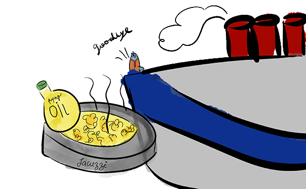

Willy, surprised, embarked on the journey on a luxurious five-star boat. They applied a relaxing oil to him, making it feel like a bubbling jacuzzi. He was with a bunch of sardines, all international, from different parts of the Atlantic Ocean.
Willy arrived in New York, astonished by the lights of Times Square,
heading towards the Portuguese Sardine Store.

Back Next